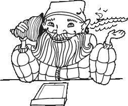
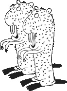
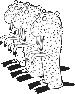
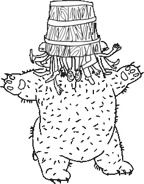
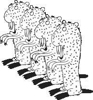
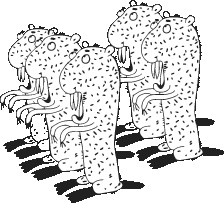
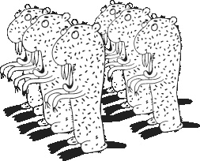
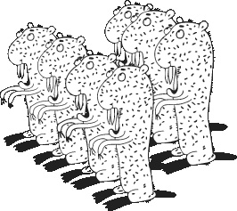
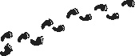

Дневник Лешего
21 мая
Забыл один турист у меня планшет. Теперь могу дневник свой писать. Давно хотел начать, а грамоте-то я не шибко обучен, а тут Т9 спасает. Заряжаю у лесника нашего – Кузьмича, пока его дома нет. А еще халявный WI-FI у него есть. Нет-нет сидим в Интернете с медведем, ржем.
22 мая
Заяц нашел поляну конопли. Теперь думает, что он – внебрачный сын Кощея. Ходит по лесу, показывает всем яйца и говорит, что хрен вам, а не игла.
24 мая
Перечитывал Пушкина. «…Там чудеса, там леший бродит…» Хорошо тогда корпоратив отметили. Я еще два дня потом дображивал.
25 мая
Кузьмичу обрубили Интернет за неуплату. Теперь он бухает и гоняет зайца по лесу. Заяц странный стал в последнее время. Все время жрет и ржет.
27 мая
Бобры приходили, просили изоленты. Не дал.
28 мая
Отмечали день пограничника. Кабан как знал – не пришел. Пришлось пить водку без закуски. А что с него взять? Он же танкист… Кузьмич отмечал с нами. Почему-то называл меня Сергеем Степановичем и хотел набить морду медведю. Думал, что это его бывшая теща. Похожа, наверное…
30 мая
Приходил заяц, смеялся и просил вкусный тортик.
1 июня
Началось лето. Ходил к березкам, обнимал, плакал, пел Любэ… Ностальгировал.
2 июня
Переживаю за зайца. Написал лемуру, заказал узбагоительного.
4 июня
Приходили бобры. Просили перфоратор. Послал их на хрен.
5 июня
Ходил на Кудыкину гору полить помидоры. Встретил рака. Сидит, тужится, пытается свистнуть. Похоже, что заяц здесь был до меня…
6 июня
Приходили бобры. Послали на хрен. Дал им перфоратор.
7 июня
Было скучно. Пулял комарами в туристов.
9 июня
Заяц пригласил на день рождения. Сказал, что спиртного не будет. Наркоман, что ли?! А! Ну да…
11 июня
С медведем и зайцем ржали над ежом. Какой же он смешной! А заяц не такой уж и плохой… Люблю их всех…
12 июня
Я узнал, что у меня есть огромная семья,
И травинка, и лесок, в поле каждый колосок.
Речка, небо голубое… Это все мое, родное.
Это Родина моя, всех люблю на свете я!
До слез… Максимальный перепост!
Всех с Днем России!
14 июня
Приходил Кузьмич, пили. Сказал мне, что не верит в меня. Обидно, блин…
15 июня
Ходил к черту на кулички. Жив, зараза парнокопытная!
17 июня
Приходили бобры. Просили новую фрезу на токарный станок. Что они там делают? Рукопопы лесные, блин!
19 июня
Заяц у медведя снял на лето берлогу. Сидят там вечерами, ржут как кони.
21 июня
Кузьмич ходил с крестом по лесу и кричал, что всем хана. Опять в хлам…
23 июня
Приходили бобры. Просили удлинитель и электролобзик. Странно это все…
25 июня
Кузьмич сказал, что запаролил Wi-Fi. Пойду в гости к нему схожу, поговорю.
Пока все.
27 июня
Выпросил у Кузьмича пароль. В обмен на дрова. Кстати, сеть: «forestfree777», пароль: «&$#\%5™». Когда он придумывал пароль, наверное, просто упал на клавиатуру…
28 июня
Показывал медведю, где есть свежие ягоды. Он спрашивал, где можно достать свежих туристов. Предложил ему сходить к охотникам. Сидит, косится, жрет малину.
29 июня
Приходил Кузьмич, сказал, что хочет бросить пить. Просил контакты зайца. Хрен редьки не слаще. Пусть лучше бухает.
30 июня
Приходили бобры, просили планшет, чтобы ознакомиться с основными положениями квантовой физики. Кажется, эволюция дала сбой.
3 июля
День ДПС. Никто не отмечает, Кузьмич негодует матерными словами. Негодую за компанию. В общем, нажрались все-таки.
5 июля
Бродил по горам да по долам. Шубу Кузьмичу подарю, кафтан себе оставлю.
6 июля
Заяц ходит по лесу и агитирует всех вступать в МММ. Сходил на поляну – точно, конопли больше нет. Кстати, кабан вступил. А что еще можно ожидать от свиньи? Постоянно во что-нибудь вступит…
7 июля
Лес, пиломатериалы от производителя. Недорого.
Ой! Не туда выложил. Как тут удалить?
8 июля
Никогда! Запомните! Никогда не верьте кроликам! Приходи, посидим, кино посмотрим… Ага…
10 июля
Лиса увидела мой планшет, теперь ходит, подлизывается, глазки строит. Вот шл… В общем, прав был медведь.
11 июля
Приходили бобры. Просили изоленту. Странная последовательность…
13 июля
Устраивал субботник. Пришли только кролики. Перенес субботник от греха подальше. Не так уж у нас тут и грязно.
14 июля
Сделал интимную стрижку мха. Тут без комментариев, пожалуй…
16 июля
Кузьмич всю ночь просидел на сосне, периодически заявляя, что видит землю, но причалить не получится из-за двух драконов, играющих в бухте в бадминтон. Все-таки вышел он на зайца…
17 июля
Медведь застрял головой в ведре туристов. Бегал по лесу с дрыном и кричал, что король Артур приказал собрать войско к ночи. Вот так вот смотришь на него иногда – вроде позитивный, веселый зверь. А иногда – быдло быдлом…
18 июля
Кормил волка. Все время косится куда-то в лес.
19 июля
Встретил зайца. Предлагал мне косметику AVON. Скажу честно, взял скраб. На хрена он мне нужен? Где их там обучают?
20 июля
Приходили бобры, обновили Андроид. Если честно, немного мандражирую, когда вижу, как бобры заходят в Play Market. Странно это все…
27 февраля
Встал пораньше. Обычно встаю в начале марта, а в этом году уже в феврале выспался. Пошел к Кузьмичу забирать планшет, оставлял ему на зиму. Этот… Вурдалак… Все дневники мои за полгода поудалял. Говорит, негоже людям про мою жизнь знать. Он вроде как в фэйсбуке работал. Или в ФСБ… Не помню уже. В общем, придется заново начинать.
28 февраля
Говорят, новые переехали к нам. Послал сообщение, забил стрелу. Медведь спрашивает, зачем стрелу забивать? А на фига она мне нужна? Лук-то я давно потерял, а колчан бобрам отдал. Они в нем гвозди хранят. Когда ж уже руки дойдут посмотреть, что они там делают.
1 марта
Сходили. Познакомились. Медведь испортил всю малину. Во всех смыслах. Секьюрити, блин, туды его в калошу! Кот у Домовика вообще не в себе, по-моему. А в общем, нормальные пацаны. Пойду бобрам гвоздей дам. Когда уже они угомонятся?
2 марта
Грачи прилетели. Достали уже эти чернокрылые. Понаприлетали…
3 марта
Проходил мимо дома Домового, заглянул в окно. Так весь день и простоял. «Великолепный век» – это шедевр! Пойду медведю расскажу.
5 марта
Второй день бужу медведя. Хоть бы хрен! Говорит: «Я не сплю, я просто лежу с закрытыми глазами» и «Еще пять денечков, и я встаю». Зато каждую весну говорит, что осенью ляжет спать пораньше! Ага…
6 марта
Передал через зайца Домовому сушеных грибочков. Так сказать, в знак уважения. Целый день не возвращается. Что-то мне подсказывает, что не через того я грибы передал…
8 марта
Поздравляли лису. Она, конечно же, хотела новую шубу, но мы подарили ей подснежников. Медведь подмигивает и говорит, что на шубу нужно… заработать. Плоские у него шутки, хоть в планшет вместо симки вставляй.
10 марта
Приходил Кузьмич. Сказал, что потерял ключи от домика. Отправил его на Достоевского/Зои Космодемьянской. Не буду объяснять, почему именно туда. Просто так нужно… Вход со двора.
13 марта
Пришел какой-то мертвый дед, сказал, что немцы в деревне. Пришли немцы, спрашивали про деда. Отправил их к бобрам. Тем более у немцев опыт строительства уже есть.
14 марта
Люблю гулять по весеннему лесу! Вот так идешь иногда, присядешь на пенечек, а вокруг… Красота! Птицы уже петь начинают, букашки всякие уже проснулись, заяц на дереве смеется с чего-то… Стоп! Ах ты зараза! Ты куда грибы дел?
16 марта
Приходили бобры, приносили документы на подпись. Открывают ОАО «Леснано». Спросил, кто директор. Сказали, что Рыжий из соседнего леса. По мне, так хоть медведь, лишь бы делом занимались. Хотя нет, медведя не надо. Он все равно дрыхнет на всех мероприятиях.
19 марта
Сидел у Кузьмича. Пришел Водяной. В хлам. Только по Русалке, завернутой в Андреевский флаг, поняли, что сегодня день подводника. Ну, как говорится, за ВДВ! А почему нет? Синева же расплескалась…
22 марта
Пришли какие-то туристы. Орали песни. Вышел, вежливо сказал, что у нас после одиннадцати не шумят. Говорят, что у страха глаза велики. Ни фига. У страха штаны коричневые.
24 марта
Пришел заяц, предложил посидеть на полянке, поговорить. Случайно сел на ежа. Вот так нелепо заяц подсадил меня на иглу.
26 марта
Смотрели с Кузьмичом «Давай поженимся». Долго с ним спорили, кричали, сошлись на том, что алюминий не должен подорожать. Ну а что? Женская программа, женская логика…
28 marta
Prixodili nemci, poprosili planshet na 5 minut. Che za fignya? Kak obratno pereklyuchit’sya?
29 марта
Кузьмич помог. Сказал, чтобы никогда больше не давал им планшет. Говорит, немец, он такой… Сегодня он играет джаз, а завтра запоет Du Hast…
Da blin!!! Kuzmich!!!!
11 июля
Вчера была свадьба Зинедина и Кузьмича. Домовой говорит, что сегодня они улетают куда-то в Африку, а через неделю она переедет ко мне. Точнее, в домик Кузьмича. Всем лесом надеемся, что они поехали в Сомали. Заяц говорит, что в стране, которую назвали в честь рыбы-боксера, никогда не будет спокойно… Да где ж он прячет свой допинг?!!
12 июля
Попросил деда, чтобы немцы вырыли вокруг домика несколько противотанковых рвов. Не то чтобы я боюсь… Просто мало ли… Лучше перенедо… пербез… недопербзд… В общем, пусть копают.
13 июля
Медведь весь день играл на балалайке и ел блины, чем приводил немцев, копающих рвы, в состояние комы. Ну это нормально. Первый блин всегда комой.
14 июля
Решил побриться. Медведь сказал, что где-то слышал, что бриться лучше Невой. Почему-то захотелось взять топор и прорубить куда-нибудь окно.
15 июля
Дед сказал, что нашел среди немцев двух поляков. Тут же пришел какой-то бородатый мужик, представился Иваном, сказал, что знает, где растут яблоки, и увел их в лес.
16 июля
Прибежал напуганный заяц и сказал, что немцы по лесу идут в ногу. Сказал ему, чтобы он шел немного выше. В ногу они идут… А что не в палец?
17 июля
Сажал саженцы. Заяц бегает по лесу и орет, что всем нужно прятаться, потому что у Лешего в руках ствол. Ну да, ствол… И что тут такого? Где ж мне доктора найти?..
18 июля
Бобры приходили. Давно я их не видел. Просили рулетку. Заяц сказал, что он знает, где рулетка, начал подмигивать и увел их куда-то, предварительно спросив, есть ли у них что поставить. Не знаю как они, а лично я могу поставить диагноз. Точно.
19 июля
Домовой вернулся домой. Привез мне ракушку. Говорит, что если прислонить к уху, то можно услышать море. Прислонил. Там сказали, что в данный момент море недоступно. А как же тогда Водяной в Темрюк ездил? Где-то меня дурят…
20 июля
Зинаида Захаровна въехала в домик Кузьмича. Не с первого раза, но все же въехала. Первый раз вижу такой облегающий дом.
23 июля
Два дня ничего не писал, потому что сел планшет. Кузьмич говорит, что электричества нет. Говорят, о вере и религии лучше не спорить, но я уверен, что электричество все же есть.
24 июля
Дед жалуется, что с переездом Зинедина все немцы стали ходить с кислыми минами. Медведь говорит, что у муравьев кислые задницы, и ничего, живут же как-то… А мины я посоветовал все-таки забрать. Мало ли что…
25 июля
Медведь стырил у туристов тушенку. Теперь бегает с ней по лесу и пытается скрыться от Зинедина. Заяц бегает с ним и кричит, чтобы он скидывал. Не знаю, чем это закончится, но, кажется, в нашем лесу начинается матриархат. Ну или Зинаиго…
26 июля
Всю ночь не давал спать камыш. Шумит, зараза. Еще и деревья что-то гнутся…
27 июля
Заяц попросил капусты на карманные расходы. Фигушки! Знаю я его эти наркоманные расходы… Потом с елки его снимать, иголки вытаскивать… Надо его на работу устроить куда-нибудь.
28 июля
Кузьмич жалуется, что Зинаида Захаровна заставляет его засыпать рвы. Не понимаю, зачем заставлять человека засыпать, если он не хочет. Может, у него бессонница!..
29 июля
Заяц подружился с ежом. Очень предсказуемо…
30 июля
Вчера наткнулся в лесу на шалаш. Рядом сидит какой-то лысый мужик, говорит, что он Ленин, и спрашивает, где Разлив. Хорошо, что хоть не Зинаидин… Отправил его к Кузьмичу. Тот точно знает, где разлив и почем.
...